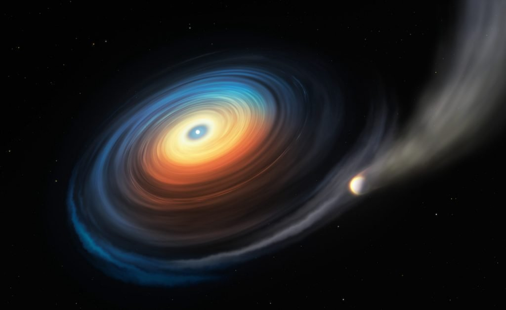

ဒီကြယ်ဖြူပုလေးက အရင်ကတော့ ကြယ်ကြီး တစ်လုံးပါ။ အခုတော့ အသက်သေဆုံးသွားတဲ့ ကြယ်တစင်းပေါ့။ ကြယ်အသေးလေးတွေ သေဆုံးသွားတဲ့ အခါ ကြယ်ဖြူပု လေးတွေ အဖြစ်နဲ့ ကြွင်းကျန် ရစ်ခဲ့ ကြပါတယ်။ ဒီလိုမျိုး ကြယ်ဖြူပုတွေကို ဝန်းရံ လည်ပတ်နေတဲ့ ဂြိုလ်တွေကို ယခင်က တခါမှ မတွေ့ခဲ့ရ ဖူးပါဘူး။ အခုလို ရှာဖွေတွေ့ရှိတာဟာ ဒါပထမဆုံး အကြိမ်ပဲ ဖြစ်ပါတယ်။
ဒီကြယ်ဖြူပု လေးရဲ့ အရွယ်က ကမ္ဘာ ရဲ့ အရွယ်လောက်ပဲ ရှိတာပါ။ သူ့ကို ပတ်နေတဲ့ ဂြိုလ်ကြီးကတော့ သူ့ရဲ့ ၄ ဆ လောက် ပိုပြီး ကြီးပါတယ်။ နေအဖွဲ့အစည်း ထဲကဆို နက်ပ်ကျွန်း ဂြိုလ်နဲ့ အရွယ် တူတူလောက် ရှိပါမယ်။
ဒီရှာဖွေတွေ့ရှိမှုဟာ ကြယ်တွေ သက်တမ်းကုန်လို့ ကြယ်ဖြူပု ဘဝပြောင်းသွားတဲ့ ဖြစ်စဉ်မှာ ဒီကြယ်ကို ရံနေတဲ့ ဂြိုလ်ရံတွေ မပျက်မစီး ကျန်နေနိုင်တယ် ဆိုတဲ့ အထောက်အား ရရှိလိုက်ခြင်းပဲ ဖြစ်ပါတယ်။ နောက်ပြီး စကြာဝဠာထဲက ကြယ်သေတွေရဲ့ ပတ်လည်မှာ အငွေ့ပျံနေတဲ့ ဂြိုလ်တွေ အမြောက်အများ ရှိနေနိုင်တယ် ဆိုတာကိုလဲ ညွှန်ပြနေပါတယ်။ ကျွန်တော်တို့ရဲ့ နေကလဲ တချိန်မှာ ကြယ်ဖြူပု ဘဝနဲ့ ဇါတ်သိမ်းသွားမယ့် ကြယ်တစ်လုံးပဲမို့ အခု ဆူပါနိုဗာ ပေါက်ကွဲမှုဟာ နေအဖွဲ့အစည်းထဲက ဂြိုလ်တွေရဲ့ အနာဂါတ် ကိုလဲ ညွှန်ပြနေပါတယ်။
ကံကောင်းတဲ့တွေ့ရှိမှု
ဒီ ဂြိုလ်ကြီး ပတ်နေတဲ့ ကြယ်ဖြူပုဟာ ကမ္ဘာကနေဆို အလင်းနှစ် ၁,၅၀၀ လောက် အကွာမှာ ရှိပါတယ်။ ဒီ ကြယ်ဖြူပု ထဲမှာ နျူကလိယ အဏုမြူ လောင်ကြွမ်းမှုတော့ မရှိတော့ပါဘူး။ ဒါပေမယ့် ယခင် လောင်ကြွမ်းခဲ့ စဉ်က ကျန်ခဲ့တဲ့ အပူရှိန်က ကျန်နေသေးတာမို့ ဒီ ကြယ်ဖြူပုရဲ့ မျက်နှာပြင် အပူချိန်ဟာ ဒီဂရီ စင်တီဂရီတ် ၂၅,၀၀၀ လောက် ရှိပါတယ်။ ဒီအပူချိန်ဟာ ကျွန်တော်တို့ နေရဲ့ မျက်နှာပြင် အပူချိန်ထက် ဆို ၅ ဆ လောက် ပိုပူပါတယ် (နေရဲ့ မျက်နှာပြင်က ဒီဂရီ စင်တီဂရိတ် ၅,၅၀၀ လောက် ရှိတာပါ)။ဒီကြယ်ဖြူပုဟာ စလိုအန် ဒစ်ဂျစ်တယ် ကောင်းကင်လေ့လာရေး (Sloan Digital Sky Survey) စီမံကိန်းမှာ လေ့လာခဲ့တဲ့ ကြယ်ဖြူပု ၇,၀၀၀ ကျော်ထဲက တစ်ခုသာ ဖြစ်ပါတယ်။ ပထမတော့ နက္ခတ်ပညာရှင်တွေက ဒီကြယ်ဖြူပုကို သိပ် သတိမထားမိ ကြပါဘူး။ ဒါပေမယ့် ဒီ ကြယ်ဖြူပုကနေ ထုတ်လွှတ်တဲ့ အလင်းရောင်စဉ်ကို ခွဲခြမ်းစိတ်ဖြာ ကြည့်လိုက်တဲ့ အခါမှာတော့ ဒီကြယ်ဖြူပုထဲမှာ ဟိုက်ဒရိုဂျင် ဓါတ်ငွေ့တွေ ရှိနေတာကို တွေ့ကြရပါတယ်။ ထုံးစံက ကြယ်တွေ သေသွားတာက လောင်စရာ ဟိုက်ဒရိုဂျင် ဓါတ်ငွေ့ မကျန်တော့လို့ သေသွားကြတာပါ။ ဒါ့ကြောင့် ကြယ်ဖြူပုတွေမှာ ဟိုက်ဒရိုဂျင် ဓါတ်ငွေ့ကို တွေ့ရလေ့ မရှိတော့ပါဘူး။
ဒီ အလင်းရောင်စဉ်ကို ခွဲခြမ်း စိတ်ဖြာကြည့်တဲ့ အခါ ဟိုက်ဒရိုဂျင်တင် တွေ့ရတာ မဟုတ်ပါဘူး။ အောက်ဆီဂျင်နဲ့ ဆာလ်ဖာ ဓါတ်တွေလဲ ပါရှိနေတာ တွေ့ရပါတယ်။ ဒီဒြပ်စင် တွေဟာ အရင်က ကြယ်ဖြူပုတွေမှာ ဘယ်တုန်းကမှ တွေ့ရလေ့ မရှိခဲ့တဲ့ ဒြပ်စင်တွေ ဖြစ်ပါတယ်။
“ပြောရရင်တော့ ဒါဟာ ကံကောင်းလို့ တွေ့ရှိရတာပါ” လို့ ဒီဂြိုလ်ကို တွေ့တဲ့ သိပ္ပံပညာရှင်တွေ ထဲက တစ်ယောက်က ပြောပါတယ်။ “ဒီတွေ့ရှိချက်တွေကို အခြေခံပြီး ဒီ ကြယ်ဖြူပုမှာ ပုံမှန်မဟုတ်တဲ့ ထူးခြားတဲ့ သဘာဝ ဖြစ်စဉ်တွေ ရှိနေမယ် ဆိုတာ ထင်ရှားပါတယ်။ ကျွန်တော်တို့ကတော့ ဒါဟာ အရင် ကြယ်ဟောင်းကြီးက ကြွင်းကျန်ရစ်နေခဲ့တဲ့ ဂြိုလ် အပိုင်းအစ တွေ့ကြောင့်လို့ ယူဆပါတယ်” လို့ သူက ဆက်ပြောပါတယ်။
ဒါနဲ့ သုတေသီတွေဟာ ဒီကြယ်ဖြူပုရဲ့ အကြောင်းကို သေသေချာချာ သိအောင် ပိုမို အားကောင်းတဲ့ မှန်ပြောင်းတွေ အသုံးပြုပြီး ဆက်လက် လေ့လာ ခဲ့ကြပါတယ်။ ဒီအခါမှာတော့ ဒီ ဓါတ်ငွေ့တွေဟာ ကြယ်ဖြူပုထဲမှာ ရှိနေတာ မဟုတ်ပဲ ကြယ်ဖြူပုကို ပတ်နေတဲ့ ဝဲဂယက်ပုံ ဓါတ်ငွေ့ကွင်းကြီး ထဲမှာ ဆိုတာကို တွေ့လာရပါတယ်။
“ပထမတော့ ကျွန်တော်တို့က ဒါကို ကြယ်နှစ်လုံးပူးလို့ ထင်မိကြတာပါ။ ကြယ်တစ်လုံးဆီက ဒြပ်စင်တွေက နောက်ကြယ်ဆီကို စီးဝင်သွားပြီး ဓါတ်ငွေ့ကွင်းကြီး ဖြစ်လာတယ်လို့ ထင်တာပါ။ ဒါပေမယ့် ကျွန်တော်တို့ရဲ့ လေ့လာချက်တွေနဲ့ တွက်ချက်မှုတွေအရ ဒီကြယ်အဖွဲ့အစည်းမှာ ကြယ်ဖြူပု တစ်လုံးပဲ ရှိပါတယ်။ သူ့ဘေးမှာက ကျွန်တော်တို့ နေရဲ့ အရွယ်ထက် ၁၀ ဆလောက် ပိုကြီးတဲ့ ဓါတ်ငွေ့ ဝဲဂယက် ကွင်းကြီး ဖြစ်နေတာကို တွေ့ရပါတယ်။ ဒီ ဓါတ်ငွေ့ကွင်းကြီး ထဲမှာ ဟိုက်ဒရိုဂျင်ရယ်၊ အောက်ဆီဂျင်ရယ်၊ ဆာလ်ဖာ ဒြပ်စင်ရယ်ပဲ ပါတာကို တွေ့ရပါတယ်။ ဒီလို ထူးခြားတဲ့ ဓါတ်ဖွဲ့စည်းပုံနဲ့ ဓါတ်ငွေ့ ကွင်းမျိုးကို အခြား ဘယ် ကြယ်ဖြူပု မှာမှ မတွေ့ခဲ့ ဖူးပါဘူး။” လို့ သူက ဆက်ပြောပါတယ်။
အဲ့သည် နောက်မှာတော့ ပညာရှင်တွေဟာ ဒီလို ကွင်းမျိုး ဘာ့ကြောင့် ဖြစ်လာရတာလဲ ဆိုတာကို အဖြေရှာဖို့ ကြိုးစားခဲ့ ကြပါတယ်။

ဒီ သုတေသနမှာ အဓိက အခန်းက ပါဝင်ခဲ့တဲ့ သူကတော့ ချီလီနိုင်ငံ ဗယ်လ်ပါရာဇို တက္ကသိုလ် (University of Valparaiso in Chile) က နက္ခတ္တ ပညာရှင် မားသီးယတ်စ် ဆခရိုက်ဘာ (Matthias Schreiber) ဖြစ်ပါတယ်။ သူ့ရဲ့ တွက်ချက်မှုအရဆိုရင် ဒီ ကြယ်ဖြူပုရဲ့ ပြင်းထန်တဲ့ အပူချိန်က အနီးမှာ ရှိနေတဲ့ ဂြိုလ်ကြီးကို အစွမ်းကုန် ပူပြင်းလာစေပါတယ်။ ဒီဂြိုလ်ကြီးရဲ့ အကွာအဝေးဟာ ၀.၇ AU (Astronomical Unit = နေနှင့် ကမ္ဘာကြား အကွာအဝေးနှင့် ညီမျှသော အကွာအဝေး) မှာ ရှိနေပါတယ်။ တနည်းအားဖြင့် ဒီဂြိုလ်ကြီးနဲ့ ကြယ်ဖြူပုရဲ့ အကွာအဝေးဟာ နေနဲ့ ကမ္ဘာ အကွာအဝေးရဲ့ ၂/၃ လောက်ပဲ ဝေးတာပါ။ နေထက် ၅ ဆ လောက် ပိုပူတဲ့ ကြယ်ဖြူပုလေးနဲ့ ဒီလောက် နီးနီးကပ်ကပ် နေရတဲ့ ဂြိုလ်ကြီးအတွက် ဘယ်လောက် ပူလိုက်မလဲ ဆိုတာ စဉ်းစားကြည့်ရင် သိနိုင်ပါတယ်။ ဒီလို ပူပြင်းတဲ့ အပူဒါဏ်ကို ခံရတဲ့ ဂြိုလ်ကြီးဟာ အငွေ့ပျံ ပြီးတော့ တစ် စက္ကန့် တိုင်းမှာ သူ့ရဲ့ ဒြပ်ထု တန်ချိန် ၃,၀၀၀ ကိုဆုံးရှုံးနေရပါတယ်။
အခု တွေ့ရှိချက်တွေကို ပညာရပ် ဂျာနယ် တစ်ခုဖြစ်တဲ့ Nature သိပ္ပံ ဂျာနယ်မှာ ဖော်ပြထားတာ ဖြစ်ပါတယ်။ ဒီ သုတေသန စာတမ်းရဲ့ အဆိုအရ ဒီ ကြယ်ဖြူပု တဖြည်းဖြည်း အပူချိန် ကျဆင်းပြီး အေးလာတာနဲ့ အမျှ ဒီဂြိုလ်ကနေ ဒြပ်ထု ဆုံးရှုံးမှု ပမာဏကလဲ တဖြည်းဖြည်း နှေးလာမှာ ဖြစ်ပါတယ်။ နောက် နှစ် သန်း ၃၅၀ လောက် ရောက်ရင်တော့ ဒြပ်ထု ဆုံးရှုံးမှုကို ကမ္ဘာကနေ လှမ်းပြီး ထောက်လှမ်းလို့ မရတဲ့ ပမာဏ အထိ နည်းပါးသွားမယ်လို့ ဆိုပါတယ်။ အဲ့ဒီအချိန်အထိ စုစုပေါင်း ဆုံးရှုံးတဲ့ ဒြပ်ထုက ဒီဂြိုလ်ကြီး တစ်ခုလုံးရဲ့ ဒြပ်ထုစုစုပေါင်းရဲ့ ၄% လောက်ပဲ ရှိလိမ့်မယ်လို့ တွက်ပြပါတယ်။
သိပ္ပံ ပညာရှင်တွေကို ဝေခွဲမရ ဖြစ်စေတဲ့ အချက်တစ်ခုကတော့ မိခင်ကြယ်နဲ့ ဒီလောက် နီးကပ်တဲ့ နေရာမှာ ရှိနေတဲ့ ဒီဂြိုလ်ကြီးဟာ ကြယ်သေတဲ့ ဖြစ်စဉ်မှာ ပုံမှန်အတိုင်းဆို ပျက်စီးသွားရမှာ ဖြစ်လို့ပါပဲ။ ကြယ်သေတဲ့ ဖြစ်စဉ်မှာ မပျက်မစီး ကျန်ခဲ့တဲ့ ကိစ္စက အတော်လေး ထူးဆန်းနေပါတယ်။ ဖြစ်နိုင်တာ တခုကတော့ မူလက ဒီဂြိုလ်ကြီးဟာ ဒီ့ထက် ဝေးတဲ့ နေရာကန မိခင်ကြယ်ကို ပတ်နေခဲ့တာ ဖြစ်ပြီး ကြယ်သေတဲ့ ဖြစ်စဉ် ကာလ အတွင်း (သို့) ဒီကြယ်သေသွားပြီးတော့မှ အခုလို နီးကပ်တဲ့ ပတ်လမ်းကို ရွှေ့ပြောင်း ရောက်ရှိ လာလို့ ဖြစ်နိုင်ပါတယ်။
“ဒီတွေ့ရှိချက်က အလွန်အရေးပါတဲ့ တွေ့ရှိချက် ဖြစ်ပါတယ်။ အရင်ကတဲက ကြယ်တွေ သေတဲ့ အခါ သူ့ရဲ့ ဂြိုလ်ရံ တချို့ မပျက်စီးပဲ ကျန်ရစ်ခဲ့မယ် ဆိုတဲ့ အထောက်အထားတွေ နည်းအကျဉ်း တွေ့ရှိခဲ့ပါတယ်။ ဥပမာ ဂြိုလ်သိမ်တွေ၊ ကြယ်တံခွန်တွေနဲ့ အခြား ဥက္ကာခဲ အပိုင်းအစတွေ ကြယ်ဖြူပု တွေထဲကို ပျက်ကျတာ တွေ့ခဲ့ရပါတယ်။ ဒီလို ပျက်ကျဖို့ ဆိုတာ ဒီကြယ်ဖြူပုတွေကို ပတ်နေတဲ့ ဂြိုလ်ကြီးတွေ ရှိနေလို့ ဖြစ်မယ်လို့ သိပ္ပံပညာရှင်တွေက ယူဆခဲ့ကြတာပါ။ အခုလို ကြယ်ဖြူပု တစ်စင်းကို ပတ်နေတဲ့ ဂြိုလ်ကြီး တစ်စင်းကို ရှာဖွေ တွေ့ရှိရတာဟာ ကျွန်တော်တို့ ယူဆချက် မှန်ကန်တယ် ဆိုတဲ့ အထောက်အထား တစ်ခုပဲ ဖြစ်ပါတယ်” လို့ ဒီ သုတေသန စာတမ်းကို ပြုစုတဲ့ သုတေသီ တစ်ယောက်က ပြောပါတယ်။
ကျွန်တော်တို့နေအဖွဲ့အစည်းရဲ့နိဂုံးကဘာလဲ
နောက် နှစ် သန်း ၅,၀၀၀ လောက်ကျရင် ကျွန်တော်တို့ရဲ့ နေဟာ သူ့ရဲ့ ဗဟို အူတိုင်မှာရှိတဲ့ ဟိုက်ဒရိုဂျင်တွေကို အကုန် လောင်ကြွမ်းပြီး သွားပါလိမ့်မယ်။ အလယ်အူတိုင်က ဟိုက်ဒရိုဂျင် ကုန်တဲ့ အတွက် ဒီ အူတိုင် ဘေးပတ်ခြာလည်က ဟိုက်ဒရိုဂျင် တွေကို စတင်ပြီး လောင်ကြွမ်းပါမယ်။ ဒီဖြစ်စဉ်ကြောင့် နေရဲ့ အတွင်းပိုင်းမှာ မတည်မငြီမ် ဖြစ်လာပါတယ်။ နေမင်းကြီးဟာလဲ ပူဖောင်းကြီးလို တဖြည်းဖြည်း ဖေါင်းကားလာပါမယ်။ ဒီလို ဖောင်းကား လာတဲ့ အတွက် သူနဲ့ နီးကပ်တဲ့ ဂြိုလ်တွေဖြစ်တဲ့ ဗုဒ္ဓဟူးဂြိုလ် (Mercury)၊ သောကြာဂြိုလ် (Venus) နဲ့ ကမ္ဘာဂြိုလ် တို့ကို ဝါးမြိုလောင်ကျွမ်း ဖျက်ဆီး ပြစ်ပါလိမ့်မယ်။ဒါပေမယ့် ဒီလို ဖောင်းကားလာတဲ့ အတွက် နေရဲ့ အပြင်ဖက်ဆုံးက ဓါတ်ငွေ့တွေကို ဆွဲထားနိုင်တဲ့ ဆွဲအားကလဲ ကျဆင်းလာပါတယ်။ တစ်ချိန်မှာတော့ ဒီ အပြင်လွှာက ဓါတ်ငွေ့တွေကို ဆက် မဆွဲ ထားနိုင်တော့တဲ့ အခါ ဒီ အပြင်လွှာက ဓါတ်ငွေ့တွေက အပြင်ကို လွတ်ထွက်သွားပါမယ်။ ဒီလွတ်သွားတဲ့ ဓါတ်ငွေ့တွေကို နေရဲ့ ပတ်ဝန်းကျင်မှာ လှပတဲ့ ဓါတ်ငွေ့တိမ်တိုက် ကြီး အဖြစ်နဲ့ မြင်ကြရမှာ ဖြစ်ပါတယ်။ ဒီ တိမ်တိုက်ကြီးကို Nebula လို့ ခေါ်ပါတယ်။
အလယ်မှာ ကျန်ရစ်ခဲ့တဲ့ နေရဲ့ အူတိုင်ကတော့ “ကြယ်ဖြူပု (White Dwarf)” တစ်ခုအဖြစ် အသွင်းပြောင်းသွားမှာ ဖြစ်ပါတယ်။ ဒီ ကြယ်ဖြူပုထဲမှာ နျူကလိယ လောင်ကျွမ်းမှု ရှိတော့မှာ မဟုတ်ပါဘူး။ ဒါပေမယ့် ယခင် နေရဲ့ လောင်ကျွမ်းမှုကနေ ကျန်ရစ်ခဲ့တဲ့ အပူစွမ်းအင်တွေကြောင့် အပူရှိန်ကတော့ အလွန်ပဲ ပြင်းထန်မှာ ဖြစ်ပါတယ်။ ဒီ ကြယ်ဖြူပုက နောက်ထပ် အပူထပ်ပြီး မထုတ်နိုင်တော့တွက်အတွက် ဒီအပူ ဆုံးရှုံးတာနဲ့ အမျှ တဖြည်းဖြည်း အပူချိန် လျှော့နည်းလာမှာ ဖြစ်ပါတယ်။
“အခု ရှာဖွေ တွေ့ရှိခဲ့တဲ့ ကြယ်ဖြူပုနဲ့ သူ့အရံ ဂြိုလ်ရဲ့ ဖြစ်စဉ်က နောင် နှစ် သန်း ၅,၀၀၀ ကျော် အကြာမှာ ကျွန်တော်တို့ရဲ့ နေကိုယ်နှိုက်က ကြယ်ဖြူပု ဘဝ ပြောင်းသွားတဲ့ အချိန်မှာ ကြွင်းကျန်ရစ် ခဲ့တဲ့ ဂြိုလ်ကြီးတွေကို ဘယ်လို သက်ရောက်မှု ရှိမလဲ ဆိုတာကို လှစ်ဟ ပြနေခြင်းပဲ ဖြစ်ပါတယ်” လို့ ဒီစာတမ်းကို တင်ပြခဲ့တဲ့ သုတေသီ တွေက ပြောပါတယ်။
Reference: Giant planet found around tiny white dwarf star, a first | Astronomy Magazine